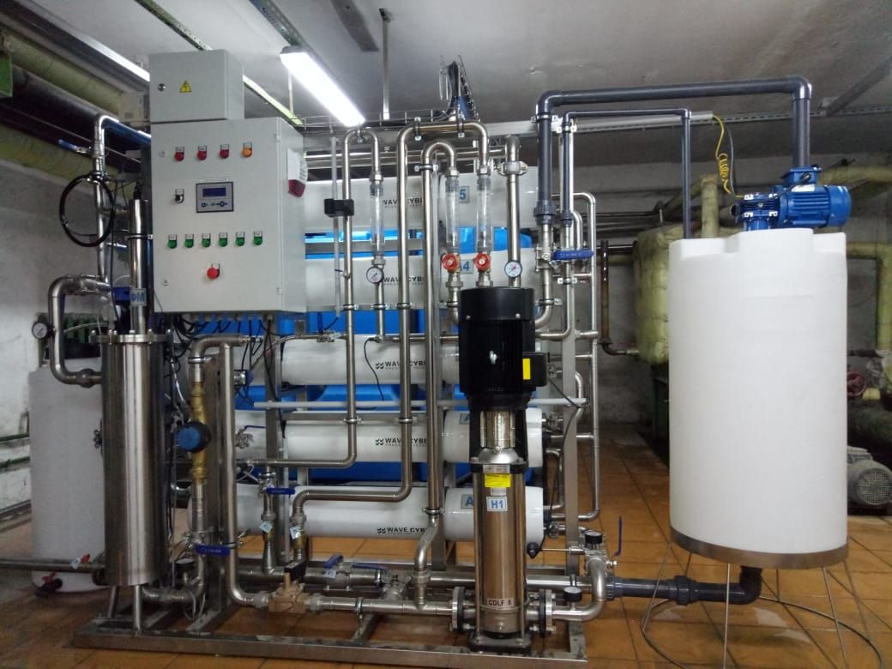

Инженерные решения для промышленности и муниципалитетов

Проблема – превышение норм по сбросу отработанной на производстве воды - с красильного стока (превышение по мутности свыше 2000 мг/л, превышение по фосфатам в 15 раз от нормы, а также по тяжелым металлам и решение должно было предусматривать возможность утилизации шлама).
Решение — аудит, подбор реагентов для очистки стока, проработка технологической и технической схемы ОС, подбор оборудования для водоочистки, поставка, монтаж и пуско-наладочные работы.

Водоподготовка

Очистные сооружения